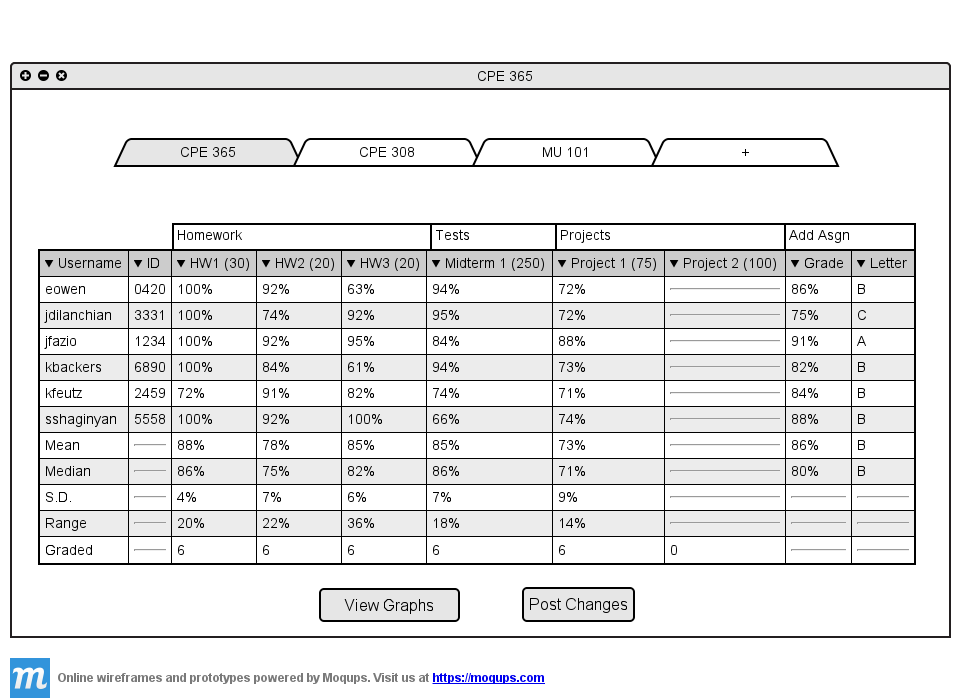
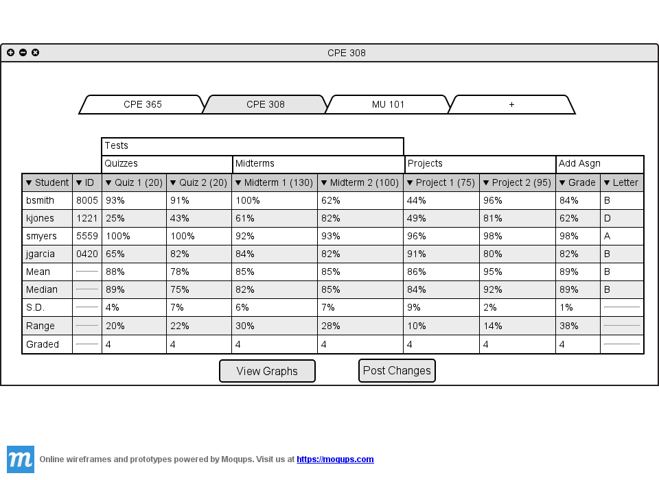

When the teacher logs in to the tool the home page will show the most recently edited
class.

Figure 2.5.4 A: Most recently edited class.
The teacher clicks on CPE 308 to view the class's grades.

Figure 2.5.4 B: Switching to CPE 308.
The spreadsheet adjusts accordingly to the class chosen and resizes the table to best
fit the screen. A class may have any number of assignments and categories. If a class
has enough assignments to fill up the width of the window, the spreadsheet becomes side-scrollable.
The teacher can collapse the spreadsheet by category to make the page easier to view.